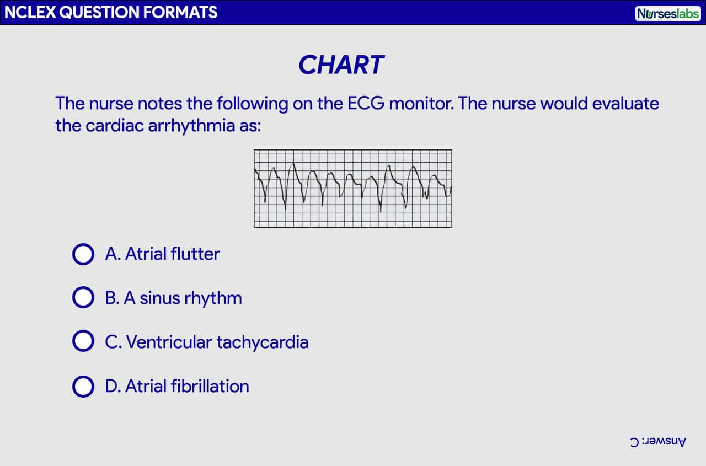
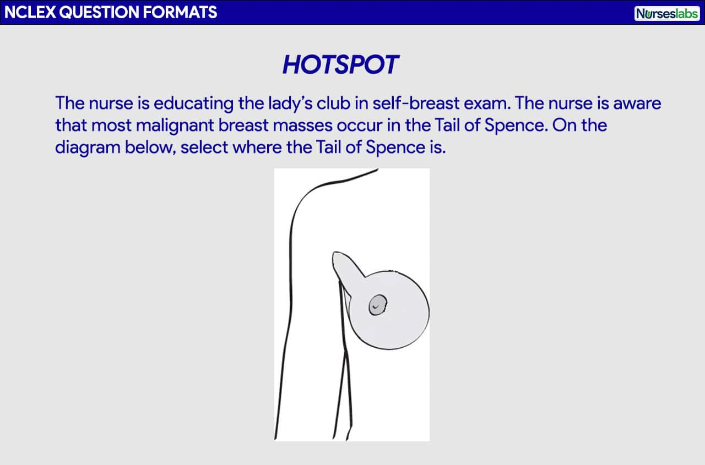
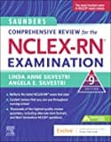
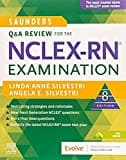
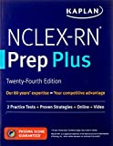
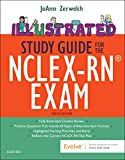

Ready to conquer the NCLEX-RN exam and launch your nursing career? You’ve come to the right place!
Welcome to our ultimate 2026 NCLEX guide—a treasure trove of over 1,000 free practice questions crafted to boost your confidence and sharpen your skills. But that’s just the beginning! Dive deep into:
- A comprehensive primer on the NCLEX-RN exam to familiarize yourself with the test format.
- Answers to the most frequently asked questions about the NCLEX.
- An in-depth look at question types you’ll encounter.
- A detailed overview of the NCLEX-RN test plan.
- Expert test-taking tips and strategies to give you that extra edge.
Let’s embark on this journey together and turn your nursing dreams into reality!
NCLEX-RN Practice Questions Test Bank
We have included more than 1,000+ NCLEX practice questions covering different nursing topics for this nursing test bank! We’ve made a significant effort to provide you with the most challenging questions along with insightful rationales for each question to reinforce learning.
Looking for the complete collection of practice questions?
For more NCLEX practice questions, please visit our Nursing Test Bank here.
We recommend you do all practice questions before you take the actual exam. Doing so will help reduce your test anxiety and help identify nursing topics you need to review. To make the most of the practice exams, try to minimize mistakes to less than 15 questions and take your time answering the questions, especially when reading the rationales.
Quiz Guidelines
Before you start, here are some examination guidelines and reminders you must read:
- Practice Exams: Engage with our Practice Exams to hone your skills in a supportive, low-pressure environment. These exams provide immediate feedback and explanations, helping you grasp core concepts, identify improvement areas, and build confidence in your knowledge and abilities.
- Challenge Exams: Take our Challenge Exams to test your mastery and readiness under simulated exam conditions. These exams offer a rigorous question set to assess your understanding, prepare you for actual examinations, and benchmark your performance.
- You’re given 2 minutes per item.
- For Challenge Exams, click on the “Start Quiz” button to start the quiz.
- Complete the quiz: Ensure that you answer the entire quiz. Only after you’ve answered every item will the score and rationales be shown.
- Learn from the rationales: After each quiz, click on the “View Questions” button to understand the explanation for each answer.
- Free access: Guess what? Our test banks are 100% FREE. Skip the hassle – no sign-ups or registrations here. A sincere promise from Nurseslabs: we have not and won’t ever request your credit card details or personal info for our practice questions. We’re dedicated to keeping this service accessible and cost-free, especially for our amazing students and nurses. So, take the leap and elevate your career hassle-free!
- Share your thoughts: We’d love your feedback, scores, and questions! Please share them in the comments below.
Included NCLEX-RN question sets for this nursing test bank are as follows. Please click on the links below and you’ll be redirected to the quiz page:
NEW UPDATE: Introducing Challenge Exams and Practice Exams
Engage with these new modes to enhance your learning journey, each tailored to meet different needs and propel you towards academic achievement.
- Dive into Practice Exam Mode for a supportive learning experience. Here, real-time feedback aids in understanding core concepts and building confidence. It’s your space for growth and preparation.
- Step up to Challenge Exam Mode to test your mastery. With rigorous questions, a leaderboard, and a timer, it’s designed to assess your readiness and foster a competitive spirit.
Test your mastery with these Challenge Exams:
Build your confidence and grasp core concepts with these Practice Exams:
What is NCLEX?
The National Council Licensing Examination (NCLEX) is a comprehensive test administered by the National Council of State Boards of Nursing (NCSBN). It assesses whether candidates possess the necessary knowledge and skills to provide safe and effective nursing care at the entry level. The NCLEX is available in two versions: the NCLEX-RN for registered nurses and the NCLEX-PN for practical/vocational nurses.
The NCSBN, composed of nursing regulatory bodies from all 50 states in the US, the District of Columbia, and four US territories, is responsible for safeguarding the public by ensuring safe nursing care. It sets the standards and guidelines for nursing licensure and develops the NCLEX examinations.
Becoming a registered nurse (RN) requires meeting specific licensure requirements determined by the licensing authorities in each jurisdiction governed by the NCSBN. One of these requirements is passing the NCLEX-RN, which evaluates the competencies necessary for practicing safely and effectively as an entry-level RN. The NCLEX-RN is used by member boards of nursing and many Canadian nursing regulatory bodies to inform their licensure decisions.
What is Next Generation NCLEX (NGN)?
The Next Generation NCLEX (NGN) is currently in effect this April 2023 for RN and LPN/LVN candidates. The change in the NCLEX is driven by the need to adapt to the increasing complexity of client care, advancements in healthcare practice, and the demand for safe clinical decision-making. The NGN aims to address the declining ability of new nursing graduates to make safe clinical decisions by integrating clinical judgment as a key competency. The NGN test format will remain adaptive but with fewer test items. Candidates will encounter Unfolding Case Studies and Stand-Alone Items, scored using partial credit with three different scoring rules. These changes in the NGN aim to assess critical thinking and the ability to make safe clinical judgments during various phases of client care.
In summary, the following are the key changes between the previous NCLEX format and the Next Generation NCLEX (NGN):
- Same adaptive test format but reduced number of items. The Next Generation NCLEX (NGN) will retain the adaptive test format, similar to the current NCLEX, but with fewer test items. Candidates will answer between 85 and 150 items, with 15 as pretest or unscored items.
- Case studies. All candidates will encounter three (3) Unfolding Case Studies, each consisting of six test items (a total of 18 items). Clinical situation information will be presented to candidates in a medical record format resembling a table-like structure. These situations are designed to assess their ability to think critically and make safe clinical decisions across different phases of client care. In addition to the case studies, some candidates may have Stand-Alone Items for their NGN exam.
- New NGN item types. The NGN exam will feature new item types, which include questions in unfolding cases and stand-alone items, highlight, cloze, matrix, bow-tie, drag and drop, and extended multiple responses.
- Scoring differences. NGN test items will be scored differently compared to the current NCLEX. They will utilize partial credit scoring with three different scoring rules: the 0/1 scoring rule, the +/- scoring rule, and the rationale scoring rule. These are explained further below.
NCLEX-RN Test Plan
The NCLEX test plan is a content guideline to determine the distribution of test questions. NCSBN uses the “Client Needs” categories to ensure the NCLEX covers a full spectrum of nursing activities. It is a summary of the content and scope of the NCLEX to serve as a guide for candidates preparing for the exam and to direct item writers in the development of items. Additionally, to assess the knowledge, skills, abilities, and clinical judgment necessary for entry-level nursing practice, the NCLEX-RN Test Plan utilizes Bloom’s taxonomy for the cognitive domain. This taxonomy provides a foundation for writing and coding examination items, focusing on application-level or higher-level cognitive abilities that require advanced thought processing.
The content of the NCLEX-RN is organized into four major Client Needs categories: Safe and Effective Care Environment, Health Promotion and Maintenance, Psychosocial Integrity, and Physiological Integrity. Some of these categories are divided further into subcategories. Below is the NCLEX-RN test plan effective as of April 2023 until March 2026:
| I. Safe and Effective Care Environment | |
| Management of Care | 15–21% |
| Safety and Infection Control | 10-16% |
| II. Health Promotion and Maintenance | 6-12% |
| III. Psychosocial Integrity | 6-12% |
| IV. Physiological Integrity | |
| Basic Care and Comfort | 6-12% |
| Pharmacological and Parenteral Therapies | 13-19% |
| Reduction of Risk Potential | 9-15% |
| Physiological Adaptation | 11-17% |
Safe and Effective Care Environment
There are two subcategories under Safe and Effective Care Environment.
- Management of Care category includes content that tests the nurse’s knowledge and ability to direct nursing care that enhances the care delivery setting to protect clients, significant others, and healthcare personnel.
- Safety and Infection Control category includes content that tests the nurse’s ability required to protect clients, families, and healthcare personnel from health and environmental hazards.
Health Promotion and Maintenance
Health Promotion and Maintenance category includes content that tests the nurse’s ability to provide and direct nursing care to the client that incorporates knowledge of expected growth and development, preventing and early detection of health problems, and strategies to achieve optimal health.
Psychosocial Integrity
The Psychosocial Integrity category is content related to the promotion and support for the emotional, mental, and social well-being of the client experiencing stressful events and clients with acute or chronic mental illness.
Physiological Integrity
In the Physiological Integrity category are items that test the nurse’s ability to promote physical health and wellness by providing care and comfort, reducing risk potential, and managing health alterations. There are four subcategories under Physiological Integrity.
- Basic Care and Comfort are content to test the nurse’s ability to provide comfort and assistance to the client in performing activities of daily living.
- Pharmacological and Parenteral Therapies category includes content to test the nurse’s ability to administer medications and parenteral therapies (IV therapy, blood administration, and blood products).
- Reduction of Risk Potential category includes content to test the nurse’s ability to prevent complications or health problems related to the client’s condition or prescribed treatments or procedures.
- Physiological Adaptation category includes questions that test the nurse’s ability to provide care to clients with acute, chronic, or life-threatening conditions.
Clinical Judgment
Clinical judgment is a central component of the NCLEX-RN Test Plan, reflecting the evolving demands and complexity of nursing practice. Nurses must engage in an iterative, multi-step process that utilizes nursing knowledge to observe and assess situations, identify client concerns, and generate evidence-based solutions to ensure safe client care. Clinical judgment questions are represented through Unfolding Case Studies or individual Stand-Alone Items, with case studies addressing each step of clinical judgment. The following are the six clinical judgment cognitive skills:
- Recognize cues “What matters most?”
Identifying relevant and important information from various sources, such as medical history, laboratory studies, and vital signs. - Analyze cues “What could it mean?”
Organizing and connecting recognized cues to the client’s clinical presentation. - Prioritize hypotheses “Where do I start?”
Evaluating and prioritizing hypotheses based on urgency, likelihood, risk, difficulty, time constraints, and other factors. - Generate solutions “What can I do?”
Identifying expected outcomes and using hypotheses to define a set of interventions aligned with the expected outcomes. - Take action “What will I do?”
Implementing the highest-priority solution(s) identified. - Evaluate outcomes “Did it help?”
Comparing observed outcomes to expected outcomes to assess the effectiveness of interventions.
Additionally, In contrast to the nursing process or ADPIE, the NCSBN focuses on AAPIE (assessment, analysis, planning, intervention, evaluation), wherein nursing diagnosis is not tested at the current NGN because it is not considered a universal language used in health care or the nursing profession. In nursing practice and for the NGN, students must use their pathophysiology knowledge to analyze client assessments and connect them with common conditions in healthcare settings.
Integrated Processes
Integral to nursing practice, several processes are integrated throughout the Client Needs categories and subcategories:
- Caring. In an atmosphere of mutual respect and trust, nurses interact with clients, providing encouragement, hope, support, and compassion to help achieve desired outcomes.
- Clinical Judgment. An observed outcome of critical thinking and decision-making, clinical judgment (discussed above) is a dynamic and iterative process. It involves using nursing knowledge to observe and assess situations, prioritize client concerns, generate evidence-based solutions, and deliver safe client care.
- Communication and Documentation. Verbal and nonverbal interactions between nurses, clients, significant others, and the healthcare team. Accurate and comprehensive documentation ensures adherence to practice standards and accountability in care provision.
- Culture and Spirituality. Recognizing and considering the unique preferences, standards of care, and legal considerations of clients (individuals, families, groups, and populations) in the context of their culture and spirituality.
- Nursing Process. A systematic approach to client care encompassing assessment, analysis, planning, implementation, and evaluation.
- Teaching/Learning. Facilitating acquiring knowledge, skills, and abilities that promote behavioral change.
Item Writers for NCLEX
Who writes questions for the NCLEX? The NCSBN sets the criteria and selection process for item writers who are registered nurses. Many of them are nursing educators with an advanced degrees in nursing, so if you’ve completed an accredited nursing program, you have already taken several tests written by nurses with backgrounds similar to those who write for the NCLEX.
Computer Adaptive Test (CAT)
The NCLEX-RN is a crucial step for registered nurse (RN) candidates seeking licensure. Administered through computerized adaptive testing (CAT), this examination utilizes computer technology and measurement theory to create a personalized and accurate assessment of each candidate’s knowledge and skills.
The CAT system employed in the NCLEX-RN ensures that each candidate receives a unique examination tailored to their abilities. As the test progresses, the computer selects items from a large item pool based on the candidate’s previous answers. These items are classified according to the test plan categories, difficulty levels, and clinical judgment steps. The CAT system continually recalculates the candidate’s ability estimate and selects subsequent items accordingly, creating an exam that aligns with the NCLEX-RN Test Plan requirements. This dynamic approach allows candidates to demonstrate their competence effectively.
Additionally, unlike traditional fixed-length exams, which assign the same items to all candidates, CAT selects items based on the candidate’s ability, resulting in a more accurate assessment. The CAT scoring algorithm estimates the candidate’s ability by considering all previous answers and the difficulty level of those items. By administering items that challenge the candidate appropriately, the exam gathers maximum information about their ability.
Pass or Fail Decisions: How to Pass the NCLEX?
Passing the NCLEX-RN requires you, the candidate, to meet a specific passing standard established by the NCSBN Board of Directors (BOD). The passing standard represents the minimum ability level necessary for safe and effective entry-level nursing practice. The BOD reevaluates this standard every three years, considering various factors such as a standard-setting exercise conducted by experts and psychometricians, historical data on candidate performance, and information on the educational readiness of aspiring nurses. Once the passing standard is set, it is uniformly applied to all candidates during the scoring process. The NCSBN indicates that these three rules govern pass-or-fail decisions: the 95% Confidence Interval Rule, Maximum-Length Exam Rule, and Run-Out-Of-Time Rule.
95% Confidence Interval Rule
In this scenario, the computer stops administering test questions when it is 95% certain that your ability is clearly above the passing standard or clearly below the passing standard.
Maximum-Length Exam
When your ability is close to the passing standard, the CAT gives you items until the maximum number of items is reached. At this point, the computer disregards the 95% confidence rule and decides whether you pass or fail by your final ability estimate. If your final ability estimate is above the passing standard, you pass; if it is below, you fail.
Run-Out-Of-Time (R.O.O.T.) Rule
In the event that a candidate runs out of time before completing the maximum number of items and the computer has not reached a 95% certainty regarding the candidate’s pass or fail status, alternative criteria come into play.
- If the candidate has not answered the minimum required number of items, the candidate will automatically fail.
- If the candidate has answered at least the minimum required number of items, the final ability estimate will be determined based on all the responses given before the exam time expires. If the score meets or exceeds the passing standard, the candidate will pass. Otherwise, the candidate will fail.
New Scoring System in the Next Generation NCLEX
The Next Generation NCLEX (NGN) incorporates different item formats, and for items that have multiple correct answers, partial credit scoring is implemented. Unlike the previous exam format, where items are scored as either all correct or all incorrect, the NGN will use polytomous scoring models to evaluate partial understanding. For example, in the previous version of NCLEX (multiple response) SATA (select-all-that-apply) items, only endorsing all the correct options results in a correct score. However, the new approach will acknowledge partial understanding, allowing differentiation between candidates with different numbers of correct options. This change will provide a more accurate assessment of candidates’ knowledge, skills, and abilities.
Three methods are used to assign partial credit for these items: plus/minus scoring, zero/one scoring, and rationale scoring. Understanding the scoring models is crucial for NCLEX-RN takers to know how their answers are evaluated and how scores are determined.
Zero/one (0/1) Scoring
The 0/1 scoring rule is used for multiple-choice items. Choosing the correct option earns one point while selecting an incorrect option gives a score of zero. This rule applies to single response items, including the example multiple-choice item.
Plus/minus (+/-) Scoring
The +/– scoring rule measures a candidate’s ability to identify relevant information. It assigns points for correct options and deducts points for incorrect options. It is used for multi-point items, and the total score is calculated by adding correct options and subtracting incorrect ones. The lowest possible score is zero. This rule is applied to NGN question types such as multiple-response and select all that apply.
Rationale Scoring
The rationale scoring rule is used for questions that assess paired information. To earn a score of one point, both answer options must be correct. If either option is incorrect, the score is 0.
How Many Questions Are on the NCLEX?
All RN candidates must answer a minimum of 85 items, while a maximum of 150 items be administered during the five-hour time allotment. Each NCLEX-RN exam includes 15 pretest items (unscored), which are indistinguishable from operational (scored) items.
Pretest Items
To ensure the effectiveness of computerized adaptive testing (CAT) in the NCLEX, the difficulty level of each item needs to be determined beforehand. This is achieved by administering these items as pretest items to a large group of NCLEX candidates. Since the difficulty of pretest items is initially unknown, they are not part of your score and are not considered when evaluating a candidate’s ability or determining pass-fail outcomes. Once a sufficient number of responses are collected, the pretest items undergo statistical analysis and calibration. If they meet the required NCLEX statistical standards, they can be used as operational items in future exams. Therefore, candidates must approach every item with their best effort, regardless of whether it is a pretest or an operational item.
Testing Time
The length of the NCLEX-RN examination varies for each candidate based on their responses, but there is a five-hour time limit for the exam, including all breaks. To ensure completion within the allotted time, candidates must maintain a reasonable pace, spending approximately one to two minutes per item. It’s important to note that the length of the examination does not determine pass or fail outcomes; candidates can succeed or fail regardless of the examination’s duration.
Case Studies in NGN
The Next Generation NCLEX (NGN) has introduced case studies that present practical clinical scenarios and include test items aligned with six cognitive abilities of the clinical judgment model. The scenario can occur in various settings, and the client’s outcome can vary, including improvement, stability, or decline with complications. Laboratory results, if included, are presented in a table, and abnormal values are highlighted with an “L” or “H”. There are two types of case studies: Unfolding Case Study with six test items assessing specific skills and Stand-Alone Items with a single test item independent of a case study.
Unfolding Case Study
An Unfolding Case Study presents a realistic client situation with evolving data resembling a medical record. It includes multiple phases over time, reflecting changes in the client’s condition. The case study evaluates all six cognitive skills of the clinical judgment model through six questions. Each test-taker receives three (3) unfolding case studies, totaling 18 items across those cases.
Stand-Alone Items
Stand-Alone Items are case studies with a single question, with the item presented as a bow-tie or a trend question type. Candidates who take more than the minimum number of items on the NCLEX receive around six to seven stand-alone cases.
Question Types in the NCLEX-RN
The different question types for the NCLEX-RN include the following:
Extended Multiple Response
In Extended Multiple Response item types, test-takers can choose one or more options in Multiple Response Select All That Apply, select a specific number of items in Multiple Response Select N, or choose options from different groupings presented in a table in Multiple Response Grouping, with scoring rules based on the selected type. Extended multiple response may include the following formats:
Multiple Response Select All That Apply
The Multiple Response Select All That Apply item type allows test-takers to choose one or more answer options. It uses the +/- Scoring Rule, where selecting correct information earns points (+1), and selecting incorrect information results in points deducted (-1). The maximum points achievable are equal to the number of correct options, and the minimum score is 0, with no negative scores. The item must have a minimum of five options and can have up to ten options, with the possibility of all ten options being correct.
Multiple Response Select N
The Multiple Response Select N item type informs the test-taker about the specific number of items (N) that can be selected. The question provides a range of options, with a minimum of five and a maximum of ten options. It uses the 0/1 Scoring Rule, where each correct response earns 1 point, while any incorrect response results in 0 points.
Multiple Response Grouping
The Multiple Response Grouping utilizes a table to present options, with a minimum of two and a maximum of five groupings. Each grouping consists of a minimum of two and a maximum of four options, ensuring an equal number of options within each grouping. Test-takers are required to select at least one option from each grouping. The item follows the +/- Scoring Rule, meaning there is no negative score per grouping. The total score for the item is determined by summing the points earned within each grouping. The maximum score achievable equals the number of keys (N).
Highlight
For this NGN item type, the test-taker is presented with information and must highlight specific parts of the information provided. Highlight question type include the following formats:
Highlight in Text
It involves a paragraph of information where the test-taker must select (highlight) specific parts of the text based on the question’s requirements. The item can include a maximum of ten options for selection and uses the +/- Scoring Rule.
Highlight in Table
The Highlight in Table item type involves a table of information. The candidate is tasked with selecting (highlighting) specific parts of the text within the table based on the question’s prompt. The item can include a maximum of ten options for selection. The table has two columns, including a header, and can have up to five rows. This item type uses the +/- Scoring Rule.
Matrix/Grid
In the Matrix NGN item type, test-takers are presented with a grid-like structure to which they must respond. There are two variations: Matrix Multiple Response, where each column can have multiple correct responses, and Matrix Multiple Choice, where test-takers select one answer option per row. Extended multiple response may include the following formats:
Matrix Multiple Response
The Matrix Multiple Response item type consists of response columns, where each column can have multiple correct responses. The item can have between two and ten columns and four to seven rows. In each column, at least one response option must be selected, but it is possible to select one or more responses per column. The item follows the +/- Scoring Rule, with no negative score per column. The total score for the item is determined by summing the points earned within each column. The maximum score achievable is equal to the number of keys (N).
Matrix Multiple Choice
The item includes a minimum of four rows and a maximum of ten rows. It can have either two or three options/columns. Test-takers are allowed to select one answer option per row. The item follows the 0/1 scoring rule, where the test-taker earns 1 point for each correct response and 0 points for incorrect responses. The total score for the item is obtained by summing the scores over the rows. The maximum score achievable is equal to the number of rows.
Drag and Drop
In the Drag and Drop NGN question type, test-takers are presented with options to drag and drop into specific targets. There are two variations: Drag and Drop Cloze, where options are placed in response targets to complete sentences and Drag and Drop Rationale, where options are matched to causes and effects. Drag and drop may include the following formats:
Drag and Drop Cloze
The Drag and Drop Cloze item type includes a range of four to ten options. It can have one or more response targets where the options are dragged to. The item must have a minimum of one sentence with one target per sentence and up to five sentences, each with one target per sentence. The item follows the 0/1 Scoring Rule, where a correct response earns 1 point and incorrect responses earn 0 points. The total score is obtained by summing the scores across all targets, with the maximum score achievable being the number of targets.
Drag and Drop Rationale
The Drag and Drop Rationale type involves one sentence with one cause and one effect or one sentence with one cause and two effects. The sentence can be a single dyad (one sentence with two targets) or a single triad (one sentence with three targets). Each drag & drop target can have three to five options. The item follows the Rationale Scoring Rule where both answer options must be correct to earn a point.
Drop Down
The Drop Down question type in NGN includes three variations: Drop Down Cloze, Drop Down Rationale, and Drop Down in Table. Drop down may include the following formats:
Drop Down Cloze
The Drop Down Cloze item type presents one or two sentences of information that require completion using drop-down options. Each drop-down can contain three to five options. The item must have a minimum of one sentence with one drop-down per sentence and can include up to five sentences, each with one drop-down. The item follows the 0/1 Scoring Rule, where the score is calculated by summing the correct responses across all drop-downs. The maximum score achievable is equal to the number of drop-downs.
Drop Down Rationale
The Drop Down Rationale item type presents either one sentence with one cause and one effect or one sentence with one cause and two effects. Each drop-down can contain three to five options. The scoring follows the Rationale Scoring Rule, where X and Y must be correct to earn one point. The maximum points that can be earned are 1 point for a dyad (one sentence with two targets) and 2 points for a triad (one sentence with three targets).
Drop Down in Table
The Drop Down in Table item type presents a table of information with drop-down options located in various parts of the table. The item must have a minimum of three columns and three rows and a maximum of five columns and four rows. One column serves as the header column. Each row contains one drop-down. The item follows the 0/1 Scoring Rule, where the score is calculated by summing the correct responses across all drop-downs. The maximum score achievable is equal to the number of drop-downs.
Bow-tie
The Bow-tie item type is visually designed to resemble a bow-tie shape. It consists of five options on the left side, five options on the right side, and four options in the middle well of the bow-tie. The item addresses all of the cognitive skills within a single item. The Bow-tie item follows the 0/1 scoring rule. The left and right wells have two answer options each, while the middle well has one answer option, resulting in a maximum possible score of 5 points. Each correct response earns 1 point, while incorrect responses earn 0 points.
Trend
The Trend item type presents information in a medical record or flow sheet format that spans over time, requiring the test-taker to analyze information across different points in time. The item addresses multiple cognitive skills within a single item. It can utilize any NGN item type except for the bow-tie. The scoring rule for the Trend item depends on the specific item type used.
Multiple-Choice Questions
Many questions on the NCLEX are in multiple-choice format. This traditional text-based question will provide you data about the client’s situation, and you can only select one correct answer from the given four options. Multiple-choice questions may vary and include: audio clips, graphics, exhibits, or charts.

Chart or Exhibit Questions
A chart or exhibit is presented along with a problem. You’ll be provided with three tabs or buttons that you need to click to obtain the information needed to answer the question. Select the correct choice among four multiple-choice answer options.

Graphic Option
In this format, four multiple-choice answer options are pictures rather than text. Each option is preceded by a circle that you need to click to represent your answer.
Audio
In an audio question format, you’ll be required to listen to a sound to answer the question. You’ll need to use the headset provided and click on the sound icon for it to play. You’ll be able to listen to the sound as many times as necessary. Choose the correct choice from among four multiple-choice answer options.
Video
For the video question format, you must view an animation or a video clip to answer the following question. Select the correct choice among four multiple-choice answer options.
Select All That Apply or Multiple-Response
Multiple-response or select all that apply (SATA) alternate format question requires you to choose all correct answer options that relate to the information asked by the question. There are usually more than four possible answer options. No partial credit is given in scoring these items (i.e., selecting only 3 out of the 5 correct choices), so you must select all correct answers for the item to be counted as correct.

Tips when answering Select All That Apply Questions
- You’ll know it’s a multiple-response or SATA question because you’ll explicitly be instructed to “Select all that apply.”
- Treat each answer choice as a True or False by rewording the question and proceed to answer each option by responding with a “yes” or “no”. Go down the list of answer options one by one and ask yourself if it’s a correct answer.
- Consider each choice as a possible answer separate to other choices. Never group or assume they are linked together.
Fill-in-the-Blank
The fill-in-the-blank question format is usually used for medication calculation, IV flow rate calculation, or determining the intake-output of a client. You’ll be asked to perform a calculation in this question format and type in your answer in the blank space provided.

Tips when answering Fill-in-the-Blank
- Always follow the specific directions as noted on the screen.
- There will be an on-screen calculator on the computer for you to use.
- Do not put any words, units of measurements, commas, or spaces with your answer, type only the number. Only the number goes into the box.
- Rounding an answer should be done at the end of the calculation or as what the question specified, and if necessary, type in the decimal point.
Ordered-Response
In an ordered-response question format, you’ll be asked to use the computer mouse to drag and drop your nursing actions in order or priority. Based on the information presented, determine what you’ll do first, second, third, and so forth. Directions are provided with the question.

Tips when answering Ordered-Response questions
- Questions are usually about nursing procedures. Imagine yourself performing the procedure to help you answer these questions.
- You’ll have to place the options in correct order by clicking an option and dragging it on the box on the right. You can rearrange them before you hit submit for your final answer.
Hotspot
A picture or graphic will be presented along with a question. This could contain a chart, a table, or an illustration where you’ll be asked to point or click on a specific area. Figures may also appear along with a multiple-choice question. Be as precise as possible when marking the location.

Tips when answering Hotspot questions
- Mostly used to evaluate your knowledge of anatomy, physiology, and pathophysiology.
- Locate anatomical landmarks to help you select the location needed by the item.
How to Register for the NCLEX?
So you’ve finally decided to take the NCLEX, the next step is registration or application for the exam. The following are the steps on how to register for the NCLEX, including some tips:
- Application to the Nursing Regulatory Board (NRB). The initial step in the registration process is to submit your application to the state board of nursing in the state in which you intend to obtain licensure. Inquire with your board of nursing regarding the specific registration process as requirements may vary from state to state.
- Registration with Pearson VUE. Once you have received the confirmation from the board of nursing that you have met all of their state requirements, proceed, register, and pay the fee to take the NCLEX with Pearson VUE. Follow the registration instructions and complete the forms precisely and accurately.
- Authorization to Test. If you were made eligible by the licensure board, you will receive an Authorization to Test (ATT) form from Pearson VUE. You must test within the validity dates (an average of 90 days) on the ATT. There are no extensions or you’ll have to register and pay the fee again. Your ATT contains critical information like your test authorization number, validity date, and candidate identification number.
- Schedule your Exam Appointment. The next step is to schedule a testing date, time, and location at Pearson VUE. The NCLEX will take place at a testing center, you can make an exam appointment online or by telephone. You will receive a confirmation via email of your appointment with the date and time you choose including the directions to the testing center.
*Changing Your Exam Appointment. You can change your appointment to test via Pearson VUE or by calling the candidate services. Rules for scheduling, rescheduling, and unscheduling are explained further here. Failing to arrive for the examination or failure to cancel your appointment to test without providing notice will forfeit your examination fee and you’ll have to register and pay again. - On Exam Day. Arrive at the testing center on your exam appointment date at least 30 minutes before the schedule. You must have your ATT and acceptable identification (driver’s license, passport, etc) that is valid, not expired, and contains your photo and signature.
- Processing Results. You will receive your official results from the board of nursing after six weeks.
NCLEX-RN Resources
Important list and resources you need to know if you’re taking the NCLEX:
- 2023 NCLEX Candidate Bulletin. This resource is a comprehensive guide for the NCLEX, providing essential information and contact details for candidates. It covers registration procedures, test fees, scheduling, testing accommodations, exam rules, and what to bring to the test site. The guide also includes details on the check-in process, breaks, technical issues, and the testing environment. It explains the results reporting process and retake-policy and provides information on the content, development, and test plans of the NCLEX. Additionally, it discusses the passing standard, item formats, and decision rules for passing or failing the exam.
- Sample Questions and Exam Preview. Get a headstart on your exam preparation with these sample test packs by the NCSBN.
- Candidate Tutorial. With the new item types, we highly recommend testing how the Next Generation NCLEX (NGN) works. This tutorial guides you on interacting with different question types in your NCLEX exam. It provides a representative sample of items you may encounter during the test, allowing you to practice their functionality.
Want more practice questions?
Please visit our Nursing Test Bank page if you’re looking to answer more practice questions from different topics and different question formats.
Recommended Resources
Recommended books and resources for your NCLEX success:
Disclosure: Included below are affiliate links from Amazon at no additional cost from you. We may earn a small commission from your purchase. For more information, check out our privacy policy.
Saunders Comprehensive Review for the NCLEX-RN
Saunders Comprehensive Review for the NCLEX-RN Examination is often referred to as the best nursing exam review book ever. More than 5,700 practice questions are available in the text. Detailed test-taking strategies are provided for each question, with hints for analyzing and uncovering the correct answer option.

Strategies for Student Success on the Next Generation NCLEX® (NGN) Test Items
Next Generation NCLEX®-style practice questions of all types are illustrated through stand-alone case studies and unfolding case studies. NCSBN Clinical Judgment Measurement Model (NCJMM) is included throughout with case scenarios that integrate the six clinical judgment cognitive skills.
Saunders Q & A Review for the NCLEX-RN® Examination
This edition contains over 6,000 practice questions with each question containing a test-taking strategy and justifications for correct and incorrect answers to enhance review. Questions are organized according to the most recent NCLEX-RN test blueprint Client Needs and Integrated Processes. Questions are written at higher cognitive levels (applying, analyzing, synthesizing, evaluating, and creating) than those on the test itself.

NCLEX-RN Prep Plus by Kaplan
The NCLEX-RN Prep Plus from Kaplan employs expert critical thinking techniques and targeted sample questions. This edition identifies seven types of NGN questions and explains in detail how to approach and answer each type. In addition, it provides 10 critical thinking pathways for analyzing exam questions.

Illustrated Study Guide for the NCLEX-RN® Exam
The 10th edition of the Illustrated Study Guide for the NCLEX-RN Exam, 10th Edition. This study guide gives you a robust, visual, less-intimidating way to remember key facts. 2,500 review questions are now included on the Evolve companion website. 25 additional illustrations and mnemonics make the book more appealing than ever.

NCLEX RN Examination Prep Flashcards (2023 Edition)
NCLEX RN Exam Review FlashCards Study Guide with Practice Test Questions [Full-Color Cards] from Test Prep Books. These flashcards are ready for use, allowing you to begin studying immediately. Each flash card is color-coded for easy subject identification.


{kind=link}
{kind=link}
Leave a Comment